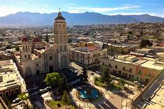
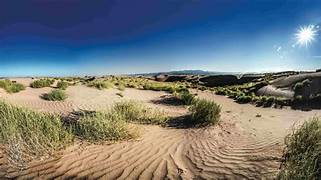
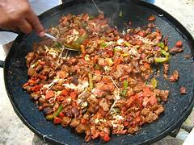
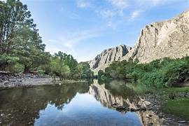

Coahuila es uno de los estados más industrializados de México, con una economía diversificada que incluye sectores como la minería, la manufactura, la agricultura y el turismo. La región es conocida por su producción de acero, carbón, vidrio, cemento y otros productos industriales.

Gran parte del territorio de Coahuila está cubierto por el desierto, lo que lo convierte en uno de los estados más áridos de México. Sin embargo, a pesar de su clima extremo, el desierto de Coahuila alberga una gran biodiversidad, incluyendo cactáceas, matorrales y una variedad de especies animales adaptadas a las condiciones desérticas.

La gastronomía de Coahuila refleja su historia y su diversidad cultural. Algunos de los platillos más representativos incluyen el cabrito asado, el arrachera, los tamales de zarzamora, el pan de pulque y el queso asadero. La región también es famosa por su carne seca, conocida como machaca, que se puede encontrar en una variedad de platos tradicionales.

A pesar de su reputación como un estado industrial, Coahuila ofrece una gran variedad de paisajes naturales para explorar. El Parque Nacional Cañón de Fernández, el Parque Nacional Maderas del Carmen y la Sierra de la Madera son solo algunas de las áreas protegidas que ofrecen oportunidades para practicar senderismo, observación de aves y otras actividades al aire libre.

Notas relevantes:
En Coahuila se encuentra la ciudad de Monclova, la cual fue fundada en el siglo XVII y
es considerada una de las ciudades más antiguas del norte de México.
El estado alberga el Cañón de Jimulco,
considerado uno de los cañones más grandes de América del Norte.
Coahuila es conocido por su producción de
carbón mineral y por ser el lugar de nacimiento de Venustiano Carranza, presidente de México durante la
Revolución Mexicana.